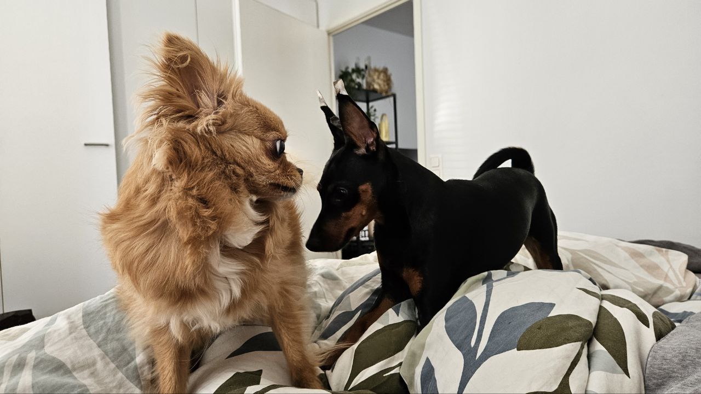

Tapaa Luna ja Ben
Luna on suloinen chihuahua, ja Ben on energinen kääpiöpinseri. He ovat parhaita ystäviä ja rakastavat seikkailuja!

Luna ja ben toivottavat sinut tervetulleeksi heidän sivuilleen.

Luna on suloinen chihuahua, ja Ben on energinen kääpiöpinseri. He ovat parhaita ystäviä ja rakastavat seikkailuja!
Luna ja ben toivottavat sinut tervetulleeksi heidän sivuilleen.